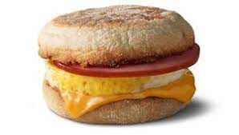
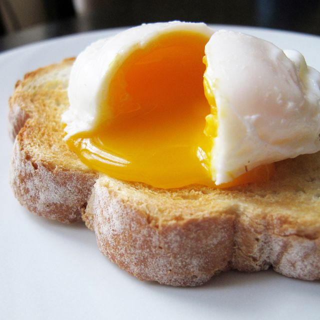

The Ultimate Egg Sandwich
- Eggs
- English Muffin
- Bacon
- Cheese
- Warm pan to high, grease it with butter and crack two large eggs into center
- Split English Muffin and flip eggs
- Flip the eggs after a brief cook time

- Cook Bacon and place cheese on muffin
- Remove the eggs, place onto Muffin with bacon and cheese
- Eat and Enjoy